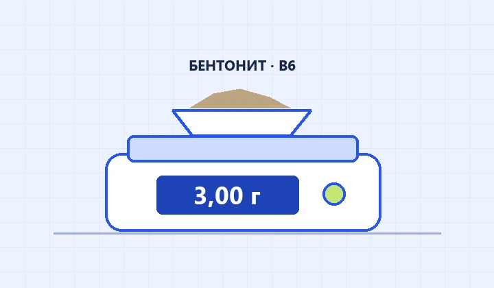
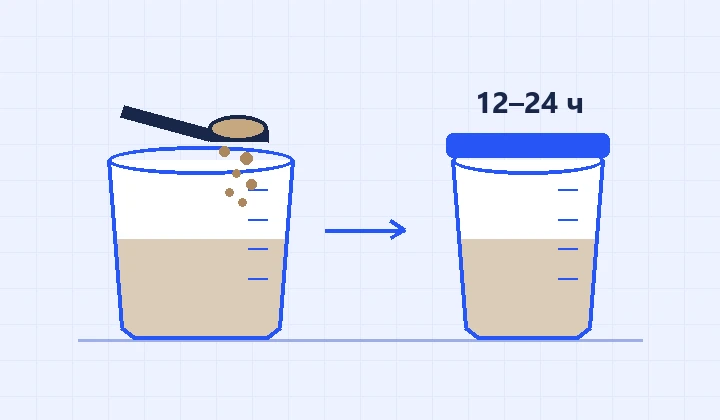
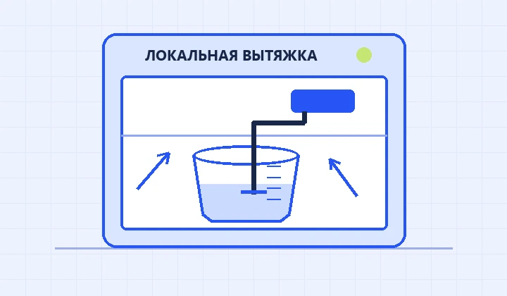
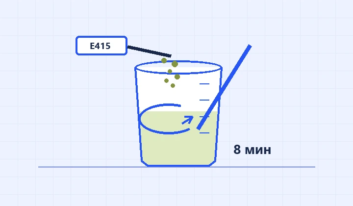
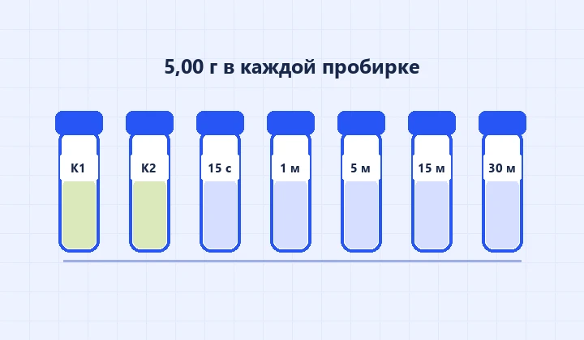
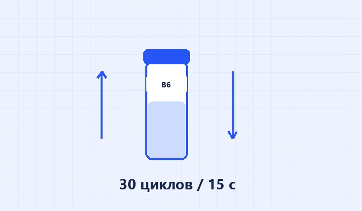
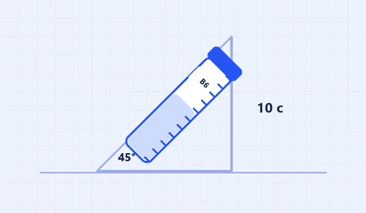
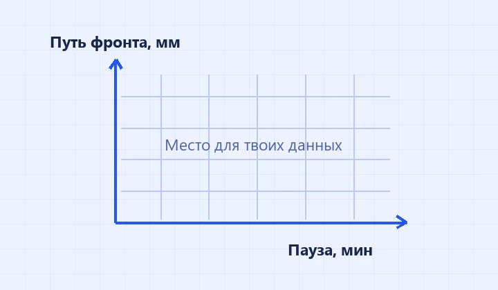

Как поставить опыт.✳
Приготовь три водных состава и контроль с водой. Затем проверь, как меняется путь фронта после встряхивания и паузы.
Техника безопасности.
- Рабочее место
Готовь лабораторные смеси с преподавателем или лаборантом. Надень халат, защитные очки и перчатки. Проверь паспорта безопасности купленных продуктов. Не нагревай смеси и не используй пищевую посуду.
- Порошки
Сухой SiO₂ взвешивай и смачивай только под работающей локальной вытяжкой. Другие порошки тоже дозируй без распыления. Просыпанное убирай влажным способом по правилам лаборатории.
- Школьный опыт
Школьники работают с подписанными закрытыми пластиковыми пробирками. Педагог заполняет их заранее и проверяет крышки. Используй воду и предварительно испытанный бентонит или ксантан. Аэросил в школьный комплект не входит.
- После опыта
Образцы не пробовать. Убрать проливы как можно скорее. Остатки собрать в подписанную ёмкость и утилизировать по правилам лаборатории. Вымыть руки.
Рецептуры и инвентарь.
Весы с шагом 0,01 г, дистиллированная вода одной партии, стаканы на 100–150 мл, шпатель, лабораторная мешалка, таймер, термометр, штатив с наклоном 45°, линейка с делениями 1 мм, смартфон с неподвижной съёмкой, одинаковые пластиковые пробирки 10–15 мл с винтовой крышкой и запасом воздуха над образцом. Для воды используется тот же штатив и такой же тип пробирок.
| Материал | Доля | Порошок + вода, г |
|---|---|---|
| Ксантановая камедь | 1,0% | 0,50 + 49,50 |
| Винный бентонит | 6,0% | 3,00 + 47,00 |
| Диоксид кремния | 10,0% | 5,00 + 45,00 |
| Вода (контроль) | 0% | 0 + 50,00 |
| Материал | Доли | Навески порошка |
|---|---|---|
| Ксантановая камедь | 0,50 / 0,76 / 1,00% | 0,25 / 0,38 / 0,50 г |
| Винный бентонит | 5 / 6 / 8% | 2,50 / 3,00 / 4,00 г |
| Диоксид кремния | 8 / 10 / 12% | 4,00 / 5,00 / 6,00 г |
Для пробной серии масса воды равна 50,00 г минус фактическая масса порошка.
Шаг за шагом.
Шаги 2–4 относятся к разным образцам. Приготовь каждый отдельно. Далее измеряй все составы одним способом.
-
Шаг 01
Взвесь воду и порошок
Поставь пустой стакан на весы и обнули показания. Взвесь воду по таблице. Порошок взвесь отдельно в тарированной ёмкости. Запиши фактические массы, код образца и номер партии. Для каждой пробы используй отдельную ёмкость.

На весах 3,00 г бентонита для образца B6. В отдельном стакане готовят 47,00 г воды. -
Шаг 02
Приготовь дисперсию бентонита
Добавляй 3,00 г глины к 47,00 г воды малыми порциями на медленной мешалке за 2–3 мин. Перемешивай ещё 5 мин, запиши режим. Закрой и оставь набухать на 12–24 ч, затем аккуратно перемешивай 1 мин тем же инструментом. Если много осадка или течёт как вода, проверь 5% и 8%.

Бентонит вносят порциями в воду. Закрытый стакан оставляют на 12–24 ч. -
Шаг 03
Диспергируй SiO₂ под вытяжкой
Под вытяжкой вноси 5,00 г гидрофильного SiO₂ малыми порциями к 45,00 г воды, дожидаясь смачивания каждой порции. Начни на малой скорости. После смачивания всего порошка перемешивай 10 мин в режиме без разбрызгивания. Запиши тип насадки и обороты. Если остаются сухие островки, проверь режим диспергирования на пилоте.

Вытяжной шкаф, стакан с водой и лабораторная мешалка. Весь порошок смачивают под вытяжкой. -
Шаг 04
Гидратируй ксантановую камедь
Равномерно рассыпай 0,50 г камеди по поверхности 49,50 г воды при медленном перемешивании за 2–3 мин. Перемешивай ещё 8 мин. Закрой ёмкость и контролируй набухание. Если остались комки, повтори приготовление и добавляй порошок тоньше и медленнее.

Тонкая струйка ксантана над водой. Жидкость перемешивается. -
Шаг 05
Разлей и выдержи образцы
После подготовки и гидратации разложи по 5,00 г каждого состава в семь одинаковых пластиковых пробирок и закрой. Пробирки промаркируй и оставь вертикально на 2 ч при 23 ± 2 °C. Две пробирки каждого состава оставь без встряхивания для контроля дрейфа. Воду разлей и выдержи так же.

Семь закрытых пробирок одного состава. Две контрольные и пять для разных пауз. -
Шаг 06
Задай одинаковое воздействие
Каждую из пяти опытных проб встряхни одним способом. Сделай 30 полных циклов вверх-вниз за 15 с, с ходом около 10 см, держа крышку закрытой. В момент окончания включи таймер. Оставляй пробирку вертикально до её измерения. Запускай таймер для каждой пробирки отдельно.

Закрытую пробирку перемещают вверх-вниз. 30 циклов за 15 секунд. -
Шаг 07
Измерь течение после паузы
Проверь отдельные опытные пробирки через 15 с, 1, 5, 15 и 30 мин. Положи каждую в штатив под углом 45° к горизонтали, запиши видео и за 10 с измерь путь фронта d по линейке вдоль оси пробирки от положения в начале наклона. Два нетронутых контроля измерь в начале и в конце серии. Если фронт упрётся в стенку, пометь предел измерения. Каждую пробирку измеряй один раз.

Пробирка на штативе под 45°. По линейке измеряют перемещение фронта за 10 секунд. -
Шаг 08
Запиши данные и построй график
Для выбранного состава приготовь три независимых замеса и повтори измерение. В таблицу занеси d в мм, паузу, состояние образца и температуру. Построй график среднего d от времени покоя с диапазоном отдельных результатов. Подумай, не объясняется ли тренд оседанием, пузырьками или дрейфом нетронутого контроля.

На схеме показаны оси «Пауза» и «Путь фронта». Точки опыта добавляются после измерений.
Как читать результаты.
При восстановлении структуры путь фронта после длинной паузы ожидается меньше, чем через 15 с, и приближается к пути у нетронутого образца. Сравни разницу d(15 с) − d(30 мин) с разбросом повторов и с дрейфом нетронутых проб. Если разница сопоставима с разбросом, запиши, что тест не различил восстановление в выбранном диапазоне. Наклонная проба даёт операционный показатель текучести. Она не измеряет вязкость напрямую и сама по себе не доказывает тиксотропию.
Проверка на реометре
Если есть реометр, согласуй геометрию и проверку скольжения с преподавателем. Стартовый трёхинтервальный тест при 25 °C: 0,1 с⁻¹ на 120 с, 100 с⁻¹ на 60 с, 0,1 с⁻¹ на 600 с. При пригодном сигнале сравни кажущуюся вязкость в третьем интервале с вязкостью в конце первого при той же скорости сдвига. Приведи режим, повторяемость и ограничения прибора.
Школьная демонстрация
Один опыт, четыре пробирки.
- Подготовь четыре герметичные пробирки одинаковой формы. W — вода, B0 — состав без встряхивания, B1 и B2 — тот же состав для встряхивания. Возьми только состав, для которого предварительная проба показала разницу при паузе 10–15 мин.
- В начале занятия встряхни B2. Через 10–15 мин встряхни B1 тем же способом. Сразу наклони все четыре пробирки на одинаковый угол и сравни течение в течение 10 с.
- Попроси ребят сначала предсказать, какой образец потечёт дальше. После показа спроси, что изменило встряхивание и почему важна одинаковая пауза. Обсуди, где пригодится материал, который легче наносить при движении и который держится на месте в покое, например в краске или зубной пасте.